Sweden main effects, nonlinear, extensive controls
Loading details
library(data.table); library(ggplot2); library(knitr); library(lme4); library(blme)
opts_chunk$set(warning=TRUE, cache=T,cache.lazy=F,tidy=FALSE,autodep=TRUE,dev=c('png','pdf'),fig.width=20,fig.height=12.5,out.width='1440px',out.height='900px',cache.extra=file.info('swed1.rdata')[, 'mtime'])
source("0__helpers.R")
load("swed1.rdata")
Analysis description
Data subset
The swed.1 dataset contains only those children born 1947 to 1968 where paternal age is known, the birthdate of the father is between 1869 and 1954.
Model description
All of the following models have the following in common:
Multivariate normal prior
Using the R package blme which provides a thin Bayesian wrapper around lme4, we define a weak multivariate normal prior on the fixed effects. Especially in models where we have many covariates and the outcome has little variability (e.g. child mortality in modern Sweden), this helps us to combat complete separation and the Hauck-Donner effect. In the absence of these conditions, the extremely weak prior (SD = 9) leads to results that are identical or very similar to the standard lme4 models.
Optimizer settings
Bobyqa is fairly robust to convergence failures. In addition to using Bobyqa, we center some variables that otherwise lead to large eigenvalues.
control_defaults = glmerControl(optimizer = "bobyqa")
Main predictor
The main predictor, paternal age, has been binned into meaningful bins. This way, we let the data speak and can see whether the shape of the relationship is consistent with a linear effect. To this end we plot a linear regression through the best estimates for each factor (inversely weighted by confidence interval width, i.e. certainty). Even if a nonlinear fit might be slightly better, our theory clearly predicts a linear fit, so we are satisfied it the data is consistent with a linear effect.
formr::crosstabs(swed.1$paternalage.factor)
## swed.1$paternalage.factor
## [0,25] (25,30] (30,35] (35,40] (40,45] (45,50] (50,55] (55,90]
## 271814 399104 351622 226085 112768 41765 11879 4245
formr::crosstabs(swed.2$paternalage.factor)
## swed.2$paternalage.factor
## [0,25] (25,30] (30,35] (35,40] (40,45] (45,50] (50,55] (55,90]
## 620666 1178758 947900 446742 160762 51313 15695 6389
Covariates
As in our main models, we control for birth.cohort (birth years in five equally large bins), male sex. Additionally, we control for paternal and maternal loss (whether either parent died within 5 years of the birth), for maternal age (bins of 14-20, 20-35 and 35-50), the number of siblings.
Model stratification
We added random intercepts for each family (father-mother dyad). We then controlled for the average paternal age in the family. Hence, the paternal age effects in the plot are split into those between families and those within families or between siblings. The relevant effect for our hypothesized mechanism, de novo mutations, is paternal age between siblings.
Episodes of selection
Here, episodes of selection refers to survival, mating success, reproductive success. To steer clear of sacrificial pseudo-replication, we make sure that each effect cannot be explained by the episode of selection preceding it. At its simplest, we check for effect on survival to reproduction only among those who lived to their first birthday. In later models, we look for an effect on number of children only among those who married and control their number of spouses.
All children
unlike the other models we don’t compute the number of surviving children. The pragmatic reason is that a) if we force data to span enough time for children’s to count as observed, we dramatically reduce sample size and b) child mortality in modern Sweden is so low, that there really shouldn’t be much of a difference between the two numbers
Children_all <- bglmer(
children ~ maternalage.factor + paternalloss + maternalloss + center(nr.siblings) + male + birth.cohort + paternalage.mean + paternalage.factor + (1|idParents),
data= swed.1, subset = byear < 1958,
family = 'poisson', control = control_defaults,
fixef.prior = normal() )
summary(Children_all)
## Cov prior : idParents ~ wishart(df = 3.5, scale = Inf, posterior.scale = cov, common.scale = TRUE)
## Fixef prior: normal(sd = c(10, 2.5, ...), corr = c(0 ...), common.scale = FALSE)
## Prior dev : 92.91
##
## Generalized linear mixed model fit by maximum likelihood (Laplace
## Approximation) [bglmerMod]
## Family: poisson ( log )
## Formula: children ~ maternalage.factor + paternalloss + maternalloss +
## center(nr.siblings) + male + birth.cohort + paternalage.mean +
## paternalage.factor + (1 | idParents)
## Data: swed.1
## Control: control_defaults
## Subset: byear < 1958
##
## AIC BIC logLik deviance df.resid
## 3907555 3907807 -1953757 3907513 1197841
##
## Scaled residuals:
## Min 1Q Median 3Q Max
## -1.748 -0.640 0.099 0.707 11.329
##
## Random effects:
## Groups Name Variance Std.Dev.
## idParents (Intercept) 1.44e-05 0.0038
## Number of obs: 1197862, groups: idParents, 786991
##
## Fixed effects:
## Estimate Std. Error z value Pr(>|z|)
## (Intercept) 0.701849 0.002731 257.0 < 2e-16 ***
## maternalage.factor(14,20] 0.048792 0.002597 18.8 < 2e-16 ***
## maternalage.factor(35,61] -0.014723 0.002444 -6.0 1.7e-09 ***
## paternallossNA -0.059100 0.001757 -33.6 < 2e-16 ***
## paternallossTRUE 0.067267 0.037583 1.8 0.0735 .
## maternallossNA -0.020066 0.001500 -13.4 < 2e-16 ***
## maternallossTRUE -0.108227 0.046943 -2.3 0.0211 *
## center(nr.siblings) 0.034973 0.000416 84.1 < 2e-16 ***
## male -0.056191 0.001343 -41.8 < 2e-16 ***
## birth.cohort(1949,1951] -0.000418 0.002020 -0.2 0.8362
## birth.cohort(1951,1954] 0.001523 0.001831 0.8 0.4056
## birth.cohort(1954,1957] 0.004360 0.001876 2.3 0.0201 *
## paternalage.mean -0.011898 0.002262 -5.3 1.4e-07 ***
## paternalage.factor(25,30] -0.028481 0.002316 -12.3 < 2e-16 ***
## paternalage.factor(30,35] -0.051962 0.002830 -18.4 < 2e-16 ***
## paternalage.factor(35,40] -0.066411 0.003633 -18.3 < 2e-16 ***
## paternalage.factor(40,45] -0.078227 0.004778 -16.4 < 2e-16 ***
## paternalage.factor(45,50] -0.077348 0.006430 -12.0 < 2e-16 ***
## paternalage.factor(50,55] -0.071984 0.009544 -7.5 4.6e-14 ***
## paternalage.factor(55,90] -0.053565 0.014412 -3.7 0.0002 ***
## ---
## Signif. codes: 0 '***' 0.001 '**' 0.01 '*' 0.05 '.' 0.1 ' ' 1
##
## Correlation of Fixed Effects:
## (Intr) m.(14, m.(35, ptrnNA ptTRUE mtrnNA mtTRUE cnt(.) male
## mtr.(14,20] -0.305
## mtr.(35,61] 0.035 0.006
## patrnllssNA -0.181 -0.005 -0.001
## ptrnllsTRUE -0.005 -0.005 0.002 0.020
## matrnllssNA -0.263 -0.071 0.128 -0.102 -0.001
## mtrnllsTRUE -0.003 -0.013 0.003 0.001 -0.002 0.020
## cntr(nr.sb) -0.018 0.004 -0.011 0.034 0.009 0.020 0.010
## male -0.244 0.002 0.001 -0.001 -0.001 0.002 0.002 -0.001
## b.(1949,195 -0.246 -0.003 -0.001 -0.029 -0.001 -0.062 -0.003 -0.010 -0.003
## b.(1951,195 -0.238 0.001 -0.001 -0.084 -0.005 -0.134 -0.008 -0.015 -0.003
## b.(1954,195 -0.190 -0.002 -0.006 -0.156 -0.020 -0.203 -0.015 -0.014 -0.003
## paternlg.mn 0.512 0.009 0.158 0.018 0.014 -0.063 0.007 -0.049 0.000
## ptr.(25,30] -0.710 0.311 -0.061 0.090 0.010 0.054 0.000 0.007 0.000
## ptr.(30,35] -0.764 0.295 -0.128 0.146 0.005 0.113 0.001 0.012 0.001
## ptr.(35,40] -0.732 0.229 -0.279 0.143 0.000 0.132 -0.001 -0.002 0.000
## ptr.(40,45] -0.655 0.171 -0.377 0.109 -0.003 0.121 -0.002 -0.013 0.001
## ptr.(45,50] -0.566 0.125 -0.354 0.074 -0.005 0.102 -0.003 -0.013 0.002
## ptr.(50,55] -0.441 0.083 -0.265 0.043 -0.007 0.078 -0.002 -0.005 0.001
## ptr.(55,90] -0.349 0.054 -0.190 0.016 -0.007 0.059 -0.003 0.005 0.000
## b.(194 b.(1951 b.(1954 ptrnl. p.(25, p.(30, p.(35, p.(40,
## mtr.(14,20]
## mtr.(35,61]
## patrnllssNA
## ptrnllsTRUE
## matrnllssNA
## mtrnllsTRUE
## cntr(nr.sb)
## male
## b.(1949,195
## b.(1951,195 0.428
## b.(1954,195 0.426 0.496
## paternlg.mn 0.027 0.052 0.074
## ptr.(25,30] -0.013 -0.023 -0.038 -0.393
## ptr.(30,35] -0.021 -0.051 -0.079 -0.591 0.706
## ptr.(35,40] -0.023 -0.050 -0.082 -0.688 0.647 0.754
## ptr.(40,45] -0.026 -0.053 -0.079 -0.712 0.568 0.694 0.755
## ptr.(45,50] -0.021 -0.047 -0.071 -0.684 0.483 0.610 0.677 0.683
## ptr.(50,55] -0.018 -0.037 -0.055 -0.579 0.371 0.480 0.538 0.546
## ptr.(55,90] -0.013 -0.028 -0.040 -0.497 0.289 0.383 0.432 0.440
## p.(45, p.(50,
## mtr.(14,20]
## mtr.(35,61]
## patrnllssNA
## ptrnllsTRUE
## matrnllssNA
## mtrnllsTRUE
## cntr(nr.sb)
## male
## b.(1949,195
## b.(1951,195
## b.(1954,195
## paternlg.mn
## ptr.(25,30]
## ptr.(30,35]
## ptr.(35,40]
## ptr.(40,45]
## ptr.(45,50]
## ptr.(50,55] 0.505
## ptr.(55,90] 0.410 0.336
Children_all_coefs = fortify_mine(Children_all)
plot_fortified_mer(Children_all_coefs, "Nr. Children (of those who had at least one spouse)")
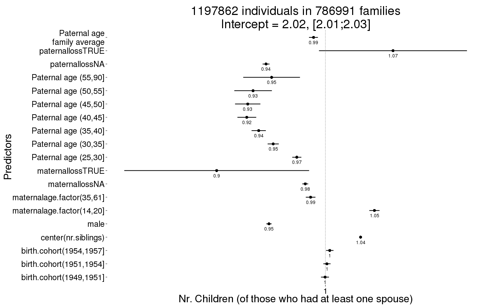
plot_factor_predicted(Children_all)
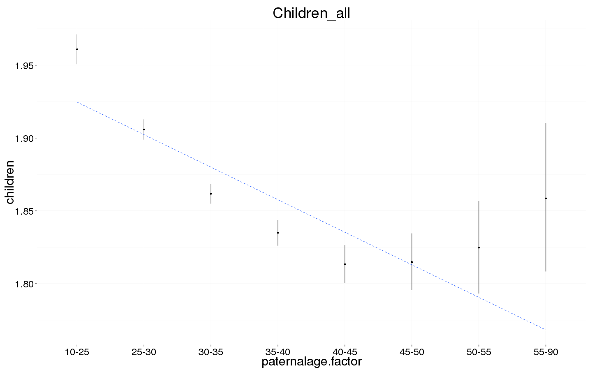
Any children
swed.1$any_children = ifelse(swed.1$children > 0, 1, 0)
Any_children <- bglmer(
any_children ~ maternalage.factor + paternalloss + maternalloss + center(nr.siblings) + birth.cohort + male + paternalage.mean + paternalage.factor + (1|idParents),
data= swed.1, subset = byear < 1958,
family = 'binomial', control = control_defaults,
fixef.prior = normal() )
summary(Any_children)
## Cov prior : idParents ~ wishart(df = 3.5, scale = Inf, posterior.scale = cov, common.scale = TRUE)
## Fixef prior: normal(sd = c(10, 2.5, ...), corr = c(0 ...), common.scale = FALSE)
## Prior dev : 76.83
##
## Generalized linear mixed model fit by maximum likelihood (Laplace
## Approximation) [bglmerMod]
## Family: binomial ( logit )
## Formula:
## any_children ~ maternalage.factor + paternalloss + maternalloss +
## center(nr.siblings) + birth.cohort + male + paternalage.mean +
## paternalage.factor + (1 | idParents)
## Data: swed.1
## Control: control_defaults
## Subset: byear < 1958
##
## AIC BIC logLik deviance df.resid
## 1165481 1165732 -582719 1165439 1197841
##
## Scaled residuals:
## Min 1Q Median 3Q Max
## -4.111 0.316 0.388 0.451 1.054
##
## Random effects:
## Groups Name Variance Std.Dev.
## idParents (Intercept) 0.727 0.853
## Number of obs: 1197862, groups: idParents, 786991
##
## Fixed effects:
## Estimate Std. Error z value Pr(>|z|)
## (Intercept) 2.21014 0.01111 198.9 < 2e-16 ***
## maternalage.factor(14,20] 0.16970 0.01084 15.7 < 2e-16 ***
## maternalage.factor(35,61] -0.09894 0.00911 -10.9 < 2e-16 ***
## paternallossNA -0.33748 0.00674 -50.1 < 2e-16 ***
## paternallossTRUE 0.07105 0.15932 0.4 0.6556
## maternallossNA -0.11881 0.00600 -19.8 < 2e-16 ***
## maternallossTRUE -0.43440 0.15790 -2.8 0.0059 **
## center(nr.siblings) 0.09035 0.00186 48.5 < 2e-16 ***
## birth.cohort(1949,1951] -0.07538 0.00786 -9.6 < 2e-16 ***
## birth.cohort(1951,1954] -0.12404 0.00708 -17.5 < 2e-16 ***
## birth.cohort(1954,1957] -0.16661 0.00722 -23.1 < 2e-16 ***
## male -0.44253 0.00520 -85.1 < 2e-16 ***
## paternalage.mean -0.18661 0.00886 -21.1 < 2e-16 ***
## paternalage.factor(25,30] -0.08867 0.00924 -9.6 < 2e-16 ***
## paternalage.factor(30,35] -0.14341 0.01121 -12.8 < 2e-16 ***
## paternalage.factor(35,40] -0.15691 0.01431 -11.0 < 2e-16 ***
## paternalage.factor(40,45] -0.17826 0.01858 -9.6 < 2e-16 ***
## paternalage.factor(45,50] -0.15785 0.02463 -6.4 1.5e-10 ***
## paternalage.factor(50,55] -0.08898 0.03574 -2.5 0.0128 *
## paternalage.factor(55,90] 0.04502 0.05320 0.8 0.3974
## ---
## Signif. codes: 0 '***' 0.001 '**' 0.01 '*' 0.05 '.' 0.1 ' ' 1
##
## Correlation of Fixed Effects:
## (Intr) m.(14, m.(35, ptrnNA ptTRUE mtrnNA mtTRUE cnt(.) b.(194
## mtr.(14,20] -0.283
## mtr.(35,61] 0.019 0.006
## patrnllssNA -0.201 -0.005 0.000
## ptrnllsTRUE -0.006 -0.004 0.002 0.019
## matrnllssNA -0.267 -0.063 0.142 -0.116 -0.001
## mtrnllsTRUE -0.005 -0.015 0.005 0.001 -0.004 0.024
## cntr(nr.sb) 0.041 0.008 -0.002 0.033 0.008 0.010 0.011
## b.(1949,195 -0.242 -0.002 -0.001 -0.026 0.000 -0.062 -0.003 -0.010
## b.(1951,195 -0.230 0.002 -0.001 -0.081 -0.004 -0.135 -0.008 -0.015 0.448
## b.(1954,195 -0.180 0.001 -0.008 -0.154 -0.018 -0.206 -0.018 -0.018 0.449
## male -0.275 -0.002 0.004 0.010 -0.001 0.007 0.002 -0.009 -0.001
## paternlg.mn 0.479 0.016 0.147 0.021 0.012 -0.060 0.008 -0.013 0.033
## ptr.(25,30] -0.705 0.297 -0.055 0.090 0.010 0.052 0.000 -0.006 -0.014
## ptr.(30,35] -0.761 0.281 -0.119 0.153 0.006 0.110 0.002 -0.005 -0.025
## ptr.(35,40] -0.731 0.219 -0.264 0.154 0.002 0.130 0.000 -0.018 -0.028
## ptr.(40,45] -0.660 0.164 -0.360 0.120 -0.002 0.122 -0.002 -0.029 -0.030
## ptr.(45,50] -0.576 0.120 -0.343 0.083 -0.004 0.105 -0.003 -0.027 -0.026
## ptr.(50,55] -0.456 0.081 -0.264 0.048 -0.006 0.082 -0.003 -0.017 -0.022
## ptr.(55,90] -0.363 0.052 -0.192 0.017 -0.007 0.063 -0.003 -0.005 -0.017
## b.(1951 b.(1954 male ptrnl. p.(25, p.(30, p.(35, p.(40,
## mtr.(14,20]
## mtr.(35,61]
## patrnllssNA
## ptrnllsTRUE
## matrnllssNA
## mtrnllsTRUE
## cntr(nr.sb)
## b.(1949,195
## b.(1951,195
## b.(1954,195 0.532
## male 0.000 0.000
## paternlg.mn 0.067 0.094 0.003
## ptr.(25,30] -0.029 -0.047 0.002 -0.381
## ptr.(30,35] -0.062 -0.096 0.004 -0.581 0.724
## ptr.(35,40] -0.063 -0.101 0.003 -0.685 0.660 0.775
## ptr.(40,45] -0.066 -0.098 0.003 -0.721 0.583 0.716 0.782
## ptr.(45,50] -0.059 -0.089 0.003 -0.705 0.501 0.635 0.706 0.721
## ptr.(50,55] -0.048 -0.071 0.001 -0.611 0.393 0.510 0.573 0.587
## ptr.(55,90] -0.037 -0.053 0.000 -0.534 0.309 0.412 0.466 0.479
## p.(45, p.(50,
## mtr.(14,20]
## mtr.(35,61]
## patrnllssNA
## ptrnllsTRUE
## matrnllssNA
## mtrnllsTRUE
## cntr(nr.sb)
## b.(1949,195
## b.(1951,195
## b.(1954,195
## male
## paternlg.mn
## ptr.(25,30]
## ptr.(30,35]
## ptr.(35,40]
## ptr.(40,45]
## ptr.(45,50]
## ptr.(50,55] 0.556
## ptr.(55,90] 0.454 0.388
Any_children_coefs = fortify_mine(Any_children)
plot_fortified_mer(Any_children_coefs, "Any children")
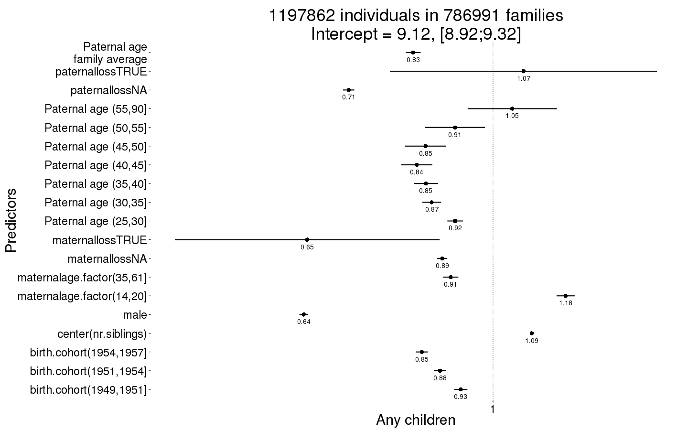
plot_factor_predicted(Any_children)
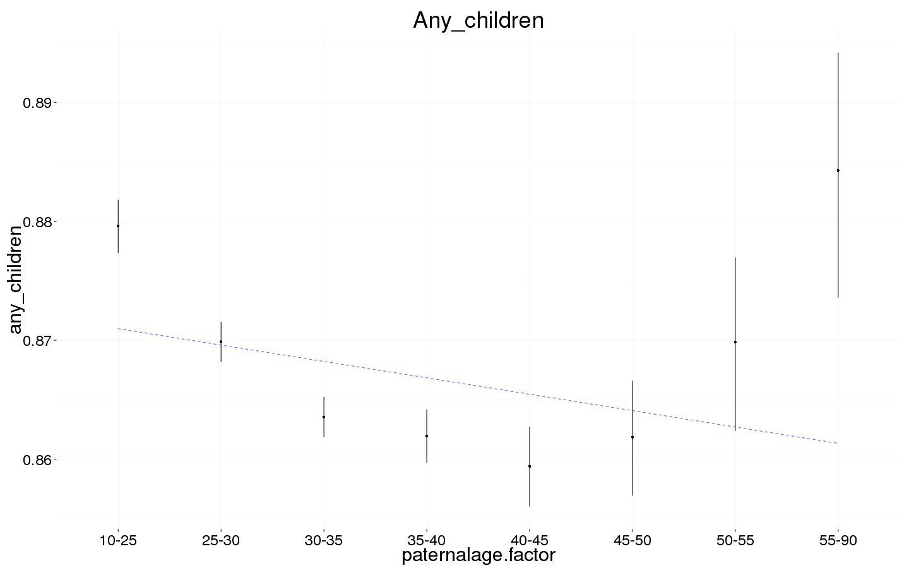
Survival to first year
Survive_infancy <- glmer(
survive1y ~ maternalage.factor + paternalloss + maternalloss + center(nr.siblings) + birth.cohort + male + paternalage.mean + paternalage.factor + (1|idParents),
data= swed.2, subset = byear < 2000,
family = 'binomial', control = control_defaults,
nAGQ = 0 )
summary(Survive_infancy)
## Generalized linear mixed model fit by maximum likelihood (Adaptive
## Gauss-Hermite Quadrature, nAGQ = 0) [glmerMod]
## Family: binomial ( logit )
## Formula: survive1y ~ maternalage.factor + paternalloss + maternalloss +
## center(nr.siblings) + birth.cohort + male + paternalage.mean +
## paternalage.factor + (1 | idParents)
## Data: swed.2
## Control: control_defaults
## Subset: byear < 2000
##
## AIC BIC logLik deviance df.resid
## 221893 222180 -110924 221849 3408792
##
## Scaled residuals:
## Min 1Q Median 3Q Max
## -14.989 0.056 0.065 0.077 0.943
##
## Random effects:
## Groups Name Variance Std.Dev.
## idParents (Intercept) 1.42 1.19
## Number of obs: 3408814, groups: idParents, 1873659
##
## Fixed effects:
## Estimate Std. Error z value Pr(>|z|)
## (Intercept) 4.46644 0.04731 94.4 < 2e-16 ***
## maternalage.factor(14,20] 0.10681 0.03346 3.2 0.0014 **
## maternalage.factor(35,61] -0.16881 0.03010 -5.6 2.0e-08 ***
## paternallossNA 0.04389 0.02774 1.6 0.1137
## paternallossTRUE -0.27163 0.11495 -2.4 0.0181 *
## maternallossNA 0.37966 0.03322 11.4 < 2e-16 ***
## maternallossTRUE -1.22987 0.11056 -11.1 < 2e-16 ***
## center(nr.siblings) -0.35105 0.00471 -74.5 < 2e-16 ***
## birth.cohort(1974,1981] 0.32525 0.02104 15.5 < 2e-16 ***
## birth.cohort(1981,1988] 0.50074 0.02210 22.7 < 2e-16 ***
## birth.cohort(1988,1993] 0.59481 0.02430 24.5 < 2e-16 ***
## birth.cohort(1993,1999] 0.91028 0.02775 32.8 < 2e-16 ***
## male -0.24343 0.01503 -16.2 < 2e-16 ***
## paternalage.mean -0.32193 0.02516 -12.8 < 2e-16 ***
## paternalage.factor(25,30] 0.12536 0.02451 5.1 3.1e-07 ***
## paternalage.factor(30,35] 0.20309 0.02945 6.9 5.4e-12 ***
## paternalage.factor(35,40] 0.35747 0.03962 9.0 < 2e-16 ***
## paternalage.factor(40,45] 0.49400 0.05538 8.9 < 2e-16 ***
## paternalage.factor(45,50] 0.70573 0.08086 8.7 < 2e-16 ***
## paternalage.factor(50,55] 0.64025 0.11658 5.5 4.0e-08 ***
## paternalage.factor(55,90] 0.84411 0.17070 4.9 7.6e-07 ***
## ---
## Signif. codes: 0 '***' 0.001 '**' 0.01 '*' 0.05 '.' 0.1 ' ' 1
##
## Correlation matrix not shown by default, as p = 21 > 20.
## Use print(x, correlation=TRUE) or
## vcov(x) if you need it
Survive_infancy_coefs = fortify_mine(Survive_infancy)
plot_fortified_mer(Survive_infancy_coefs, "Surviving infancy / first year")
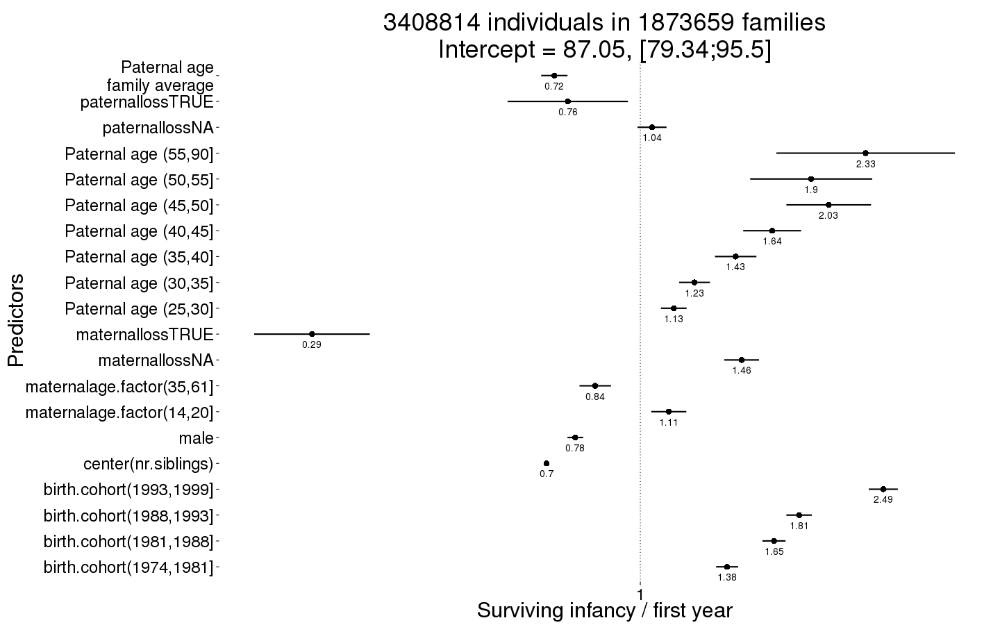
plot_factor_predicted(Survive_infancy)
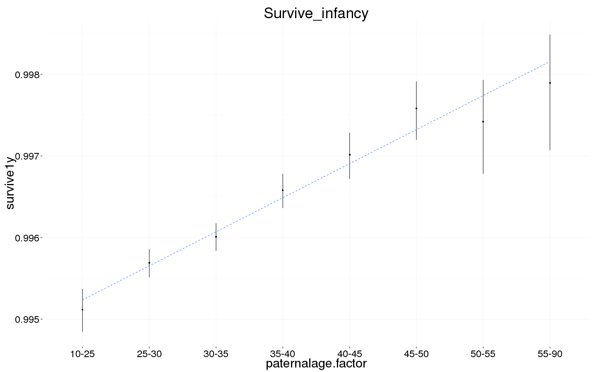
Survival to reproductive age
Survive_reproductive <- glmer(
surviveR ~ maternalage.factor + paternalloss + maternalloss + center(nr.siblings) + birth.cohort + male + paternalage.mean + paternalage.factor + (1|idParents),
data= swed.2, subset = survive1y == TRUE & byear < 1990,
family = 'binomial', control = control_defaults,
nAGQ = 0 )
summary(Survive_reproductive)
## Generalized linear mixed model fit by maximum likelihood (Adaptive
## Gauss-Hermite Quadrature, nAGQ = 0) [glmerMod]
## Family: binomial ( logit )
## Formula: surviveR ~ maternalage.factor + paternalloss + maternalloss +
## center(nr.siblings) + birth.cohort + male + paternalage.mean +
## paternalage.factor + (1 | idParents)
## Data: swed.2
## Control: control_defaults
## Subset: survive1y == TRUE & byear < 1990
##
## AIC BIC logLik deviance df.resid
## 78577 78842 -39268 78535 2268065
##
## Scaled residuals:
## Min 1Q Median 3Q Max
## -16.635 0.042 0.046 0.053 0.471
##
## Random effects:
## Groups Name Variance Std.Dev.
## idParents (Intercept) 1.51 1.23
## Number of obs: 2268086, groups: idParents, 1335934
##
## Fixed effects:
## Estimate Std. Error z value Pr(>|z|)
## (Intercept) 4.75171 0.07235 65.7 < 2e-16 ***
## maternalage.factor(14,20] -0.11257 0.05101 -2.2 0.0273 *
## maternalage.factor(35,61] -0.16477 0.05653 -2.9 0.0036 **
## paternallossNA 0.30947 0.04101 7.5 4.5e-14 ***
## paternallossTRUE -0.69558 0.13763 -5.1 4.3e-07 ***
## maternallossNA 0.64739 0.04746 13.6 < 2e-16 ***
## maternallossTRUE -1.50794 0.13962 -10.8 < 2e-16 ***
## center(nr.siblings) -0.18688 0.00904 -20.7 < 2e-16 ***
## birth.cohort(1974,1981] 0.24535 0.03294 7.4 9.5e-14 ***
## birth.cohort(1981,1988] 0.36634 0.03476 10.5 < 2e-16 ***
## birth.cohort(1988,1993] 0.43174 0.06957 6.2 5.4e-10 ***
## male -0.30040 0.02696 -11.1 < 2e-16 ***
## paternalage.mean -0.46827 0.04565 -10.3 < 2e-16 ***
## paternalage.factor(25,30] 0.25240 0.04168 6.1 1.4e-09 ***
## paternalage.factor(30,35] 0.46053 0.05242 8.8 < 2e-16 ***
## paternalage.factor(35,40] 0.63458 0.07252 8.8 < 2e-16 ***
## paternalage.factor(40,45] 0.76485 0.10194 7.5 6.2e-14 ***
## paternalage.factor(45,50] 1.02376 0.14655 7.0 2.8e-12 ***
## paternalage.factor(50,55] 1.21438 0.21565 5.6 1.8e-08 ***
## paternalage.factor(55,90] 1.73629 0.32558 5.3 9.7e-08 ***
## ---
## Signif. codes: 0 '***' 0.001 '**' 0.01 '*' 0.05 '.' 0.1 ' ' 1
##
## Correlation of Fixed Effects:
## (Intr) m.(14, m.(35, ptrnNA ptTRUE mtrnNA mtTRUE cnt(.) b.(197
## mtr.(14,20] -0.217
## mtr.(35,61] 0.018 0.013
## patrnllssNA -0.442 0.014 0.002
## ptrnllsTRUE -0.112 -0.007 0.005 0.230
## matrnllssNA -0.557 -0.017 0.069 -0.075 -0.005
## mtrnllsTRUE -0.174 -0.003 0.001 -0.006 -0.052 0.294
## cntr(nr.sb) -0.057 -0.029 -0.036 0.000 0.042 -0.008 0.034
## b.(1974,198 -0.090 0.005 -0.012 -0.122 -0.026 -0.087 -0.026 -0.006
## b.(1981,198 -0.013 0.026 -0.034 -0.195 -0.043 -0.139 -0.039 -0.033 0.456
## b.(1988,199 0.006 0.020 -0.017 -0.112 -0.024 -0.081 -0.022 -0.007 0.230
## male -0.221 -0.001 0.000 0.001 0.000 0.002 0.000 0.004 0.000
## paternlg.mn 0.440 -0.006 0.151 -0.015 0.022 -0.039 0.020 -0.108 -0.057
## ptr.(25,30] -0.508 0.319 -0.062 0.032 -0.003 0.025 -0.005 0.034 -0.019
## ptr.(30,35] -0.555 0.284 -0.134 0.067 -0.006 0.048 -0.009 0.046 -0.031
## ptr.(35,40] -0.536 0.210 -0.299 0.097 -0.008 0.051 -0.014 0.040 -0.002
## ptr.(40,45] -0.504 0.151 -0.364 0.124 -0.007 0.054 -0.012 0.035 0.018
## ptr.(45,50] -0.447 0.107 -0.304 0.133 -0.008 0.051 -0.008 0.037 0.019
## ptr.(50,55] -0.367 0.073 -0.226 0.116 -0.014 0.042 -0.008 0.042 0.012
## ptr.(55,90] -0.295 0.049 -0.161 0.088 -0.039 0.031 -0.012 0.044 0.011
## b.(1981 b.(1988 male ptrnl. p.(25, p.(30, p.(35, p.(40,
## mtr.(14,20]
## mtr.(35,61]
## patrnllssNA
## ptrnllsTRUE
## matrnllssNA
## mtrnllsTRUE
## cntr(nr.sb)
## b.(1974,198
## b.(1981,198
## b.(1988,199 0.240
## male -0.001 0.000
## paternlg.mn -0.071 -0.034 0.000
## ptr.(25,30] -0.020 -0.006 0.000 -0.389
## ptr.(30,35] -0.049 -0.024 0.000 -0.595 0.686
## ptr.(35,40] -0.034 -0.020 0.000 -0.679 0.596 0.692
## ptr.(40,45] -0.003 -0.010 -0.001 -0.685 0.504 0.620 0.672
## ptr.(45,50] 0.013 0.000 0.000 -0.632 0.412 0.527 0.582 0.577
## ptr.(50,55] 0.010 0.002 0.000 -0.545 0.326 0.429 0.477 0.474
## ptr.(55,90] 0.009 0.004 0.000 -0.475 0.260 0.352 0.393 0.392
## p.(45, p.(50,
## mtr.(14,20]
## mtr.(35,61]
## patrnllssNA
## ptrnllsTRUE
## matrnllssNA
## mtrnllsTRUE
## cntr(nr.sb)
## b.(1974,198
## b.(1981,198
## b.(1988,199
## male
## paternlg.mn
## ptr.(25,30]
## ptr.(30,35]
## ptr.(35,40]
## ptr.(40,45]
## ptr.(45,50]
## ptr.(50,55] 0.426
## ptr.(55,90] 0.354 0.299
Survive_reproductive_coefs = fortify_mine(Survive_reproductive)
plot_fortified_mer(Survive_reproductive_coefs, "Surviving to reproductive age / 15 years")
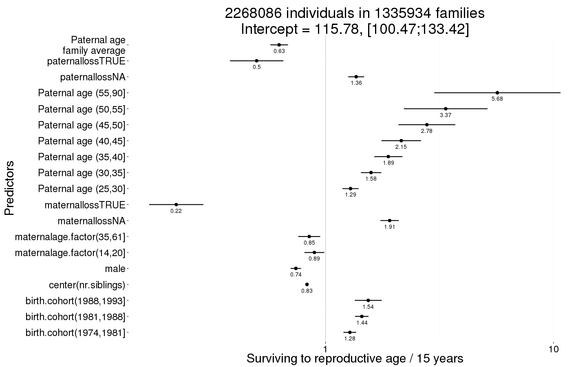
plot_factor_predicted(Survive_reproductive)
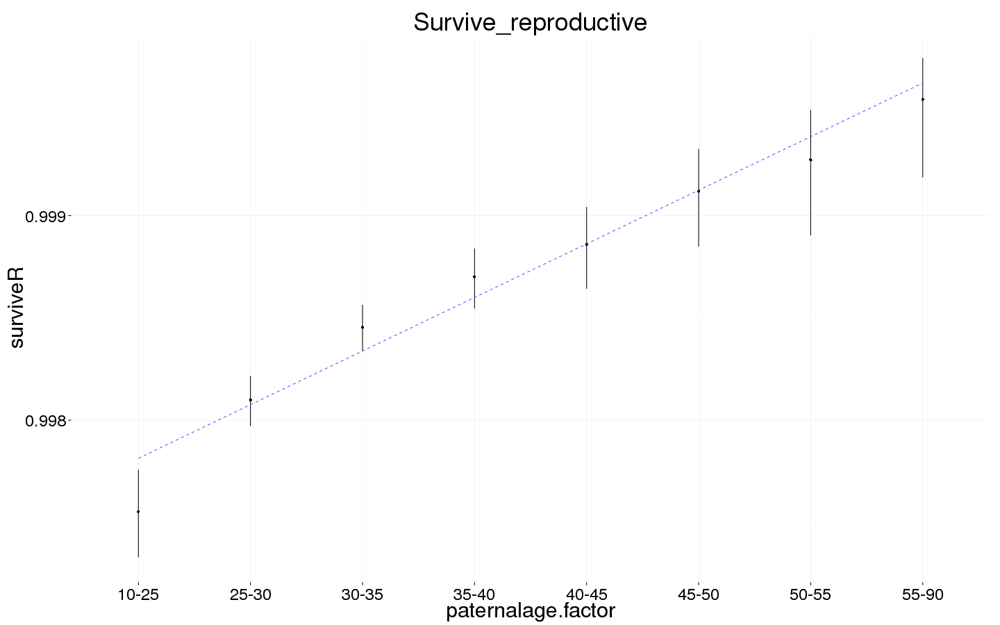
Ever married
Ever_married <- bglmer(
ever_married ~ maternalage.factor + paternalloss + maternalloss + center(nr.siblings) + birth.cohort + male + paternalage.mean + paternalage.factor + (1|idParents),
data= swed.1, subset = (surviveR == T | is.na(surviveR)) & byear < 1960,
family = 'binomial', control = control_defaults,
fixef.prior = normal() )
summary(Ever_married)
## Cov prior : idParents ~ wishart(df = 3.5, scale = Inf, posterior.scale = cov, common.scale = TRUE)
## Fixef prior: normal(sd = c(10, 2.5, ...), corr = c(0 ...), common.scale = FALSE)
## Prior dev : 81.39
##
## Generalized linear mixed model fit by maximum likelihood (Laplace
## Approximation) [bglmerMod]
## Family: binomial ( logit )
## Formula:
## ever_married ~ maternalage.factor + paternalloss + maternalloss +
## center(nr.siblings) + birth.cohort + male + paternalage.mean +
## paternalage.factor + (1 | idParents)
## Data: swed.1
## Control: control_defaults
## Subset: (surviveR == T | is.na(surviveR)) & byear < 1960
##
## AIC BIC logLik deviance df.resid
## 1559420 1559688 -779688 1559376 1392399
##
## Scaled residuals:
## Min 1Q Median 3Q Max
## -2.807 -1.087 0.475 0.562 1.349
##
## Random effects:
## Groups Name Variance Std.Dev.
## idParents (Intercept) 0.441 0.664
## Number of obs: 1392421, groups: idParents, 874603
##
## Fixed effects:
## Estimate Std. Error z value Pr(>|z|)
## (Intercept) 1.686763 0.008997 187.5 < 2e-16 ***
## maternalage.factor(14,20] -0.033832 0.008167 -4.1 3.4e-05 ***
## maternalage.factor(35,61] -0.009248 0.007567 -1.2 0.22161
## paternallossNA 0.064483 0.005450 11.8 < 2e-16 ***
## paternallossTRUE 0.021289 0.071405 0.3 0.76559
## maternallossNA 0.084299 0.004848 17.4 < 2e-16 ***
## maternallossTRUE -0.309045 0.097420 -3.2 0.00151 **
## center(nr.siblings) -0.000153 0.001455 -0.1 0.91643
## birth.cohort(1949,1951] -0.242780 0.007198 -33.7 < 2e-16 ***
## birth.cohort(1951,1954] -0.446440 0.006415 -69.6 < 2e-16 ***
## birth.cohort(1954,1957] -0.669311 0.006450 -103.8 < 2e-16 ***
## birth.cohort(1957,1959] -0.852254 0.007179 -118.7 < 2e-16 ***
## male -0.386020 0.004189 -92.1 < 2e-16 ***
## paternalage.mean -0.121755 0.007096 -17.2 < 2e-16 ***
## paternalage.factor(25,30] 0.061479 0.007277 8.4 < 2e-16 ***
## paternalage.factor(30,35] 0.080598 0.008880 9.1 < 2e-16 ***
## paternalage.factor(35,40] 0.108367 0.011388 9.5 < 2e-16 ***
## paternalage.factor(40,45] 0.095251 0.014932 6.4 1.8e-10 ***
## paternalage.factor(45,50] 0.071146 0.019870 3.6 0.00034 ***
## paternalage.factor(50,55] 0.072031 0.029096 2.5 0.01330 *
## paternalage.factor(55,90] 0.118669 0.043886 2.7 0.00685 **
## ---
## Signif. codes: 0 '***' 0.001 '**' 0.01 '*' 0.05 '.' 0.1 ' ' 1
##
## Correlation matrix not shown by default, as p = 21 > 20.
## Use print(x, correlation=TRUE) or
## vcov(x) if you need it
Ever_married_coefs = fortify_mine(Ever_married)
plot_fortified_mer(Ever_married_coefs, "Odds of ever marrying")
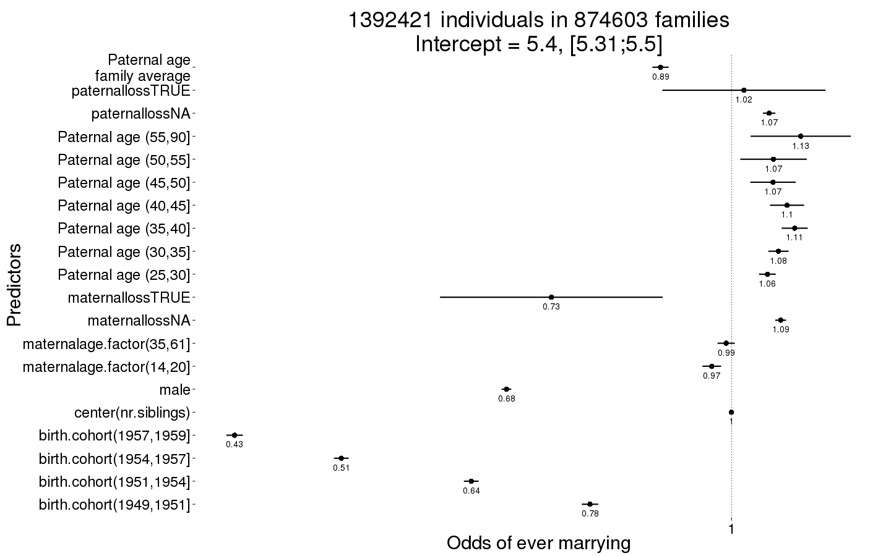
plot_factor_predicted(Ever_married)
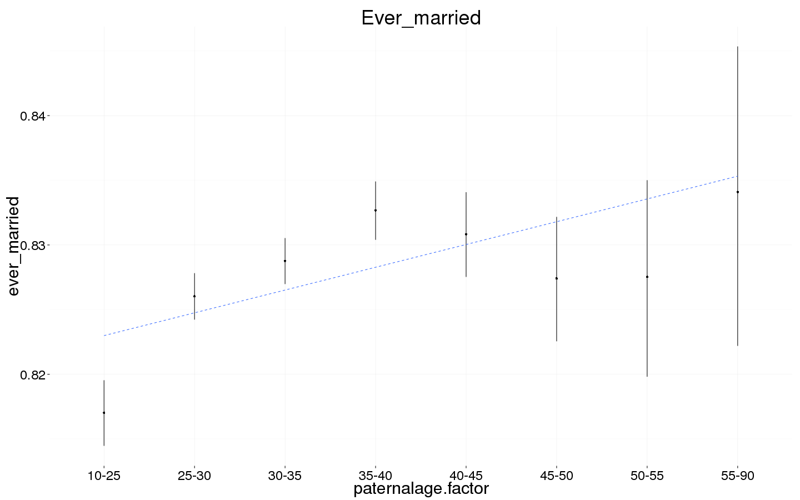
Number of children
Children <- bglmer(
children ~ maternalage.factor + paternalloss + maternalloss + center(nr.siblings) + center(spouses)*male + birth.cohort + paternalage.mean + paternalage.factor + (1|idParents),
data= swed.1, subset = spouses > 0 & byear < 1958,
family = 'poisson', control = control_defaults,
fixef.prior = normal() )
summary(Children)
## Cov prior : idParents ~ wishart(df = 3.5, scale = Inf, posterior.scale = cov, common.scale = TRUE)
## Fixef prior: normal(sd = c(10, 2.5, ...), corr = c(0 ...), common.scale = FALSE)
## Prior dev : 103.1
##
## Generalized linear mixed model fit by maximum likelihood (Laplace
## Approximation) [bglmerMod]
## Family: poisson ( log )
## Formula: children ~ maternalage.factor + paternalloss + maternalloss +
## center(nr.siblings) + center(spouses) * male + birth.cohort +
## paternalage.mean + paternalage.factor + (1 | idParents)
## Data: swed.1
## Control: control_defaults
## Subset: spouses > 0 & byear < 1958
##
## AIC BIC logLik deviance df.resid
## 2851259 2851528 -1425607 2851213 893179
##
## Scaled residuals:
## Min 1Q Median 3Q Max
## -1.939 -0.255 -0.058 0.545 10.215
##
## Random effects:
## Groups Name Variance Std.Dev.
## idParents (Intercept) 2.11e-06 0.00145
## Number of obs: 893202, groups: idParents, 642155
##
## Fixed effects:
## Estimate Std. Error z value Pr(>|z|)
## (Intercept) 0.706910 0.003116 226.9 < 2e-16 ***
## maternalage.factor(14,20] 0.026798 0.002820 9.5 < 2e-16 ***
## maternalage.factor(35,61] -0.001512 0.002624 -0.6 0.56443
## paternallossNA -0.012333 0.001893 -6.5 7.3e-11 ***
## paternallossTRUE 0.061938 0.040391 1.5 0.12516
## maternallossNA -0.001225 0.001612 -0.8 0.44725
## maternallossTRUE -0.021895 0.051158 -0.4 0.66866
## center(nr.siblings) 0.028159 0.000455 61.9 < 2e-16 ***
## center(spouses) 0.098569 0.001923 51.3 < 2e-16 ***
## male 0.011092 0.001753 6.3 2.5e-10 ***
## birth.cohort(1949,1951] 0.043415 0.002172 20.0 < 2e-16 ***
## birth.cohort(1951,1954] 0.064841 0.002012 32.2 < 2e-16 ***
## birth.cohort(1954,1957] 0.080206 0.002084 38.5 < 2e-16 ***
## paternalage.mean 0.016451 0.002425 6.8 1.2e-11 ***
## paternalage.factor(25,30] -0.018371 0.002497 -7.4 1.9e-13 ***
## paternalage.factor(30,35] -0.032699 0.003039 -10.8 < 2e-16 ***
## paternalage.factor(35,40] -0.045879 0.003892 -11.8 < 2e-16 ***
## paternalage.factor(40,45] -0.055636 0.005121 -10.9 < 2e-16 ***
## paternalage.factor(45,50] -0.059681 0.006907 -8.6 < 2e-16 ***
## paternalage.factor(50,55] -0.061590 0.010271 -6.0 2.0e-09 ***
## paternalage.factor(55,90] -0.060116 0.015547 -3.9 0.00011 ***
## center(spouses):male 0.040837 0.002861 14.3 < 2e-16 ***
## ---
## Signif. codes: 0 '***' 0.001 '**' 0.01 '*' 0.05 '.' 0.1 ' ' 1
##
## Correlation matrix not shown by default, as p = 22 > 20.
## Use print(x, correlation=TRUE) or
## vcov(x) if you need it
Children_coefs = fortify_mine(Children)
plot_fortified_mer(Children_coefs, "Nr. Children (of those who had at least one spouse)")
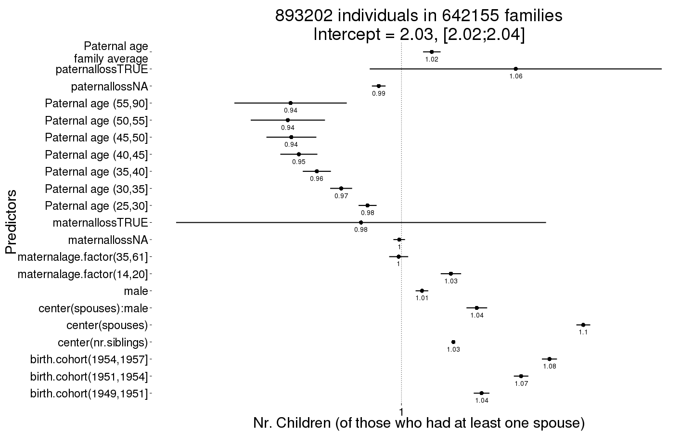
plot_factor_predicted(Children)
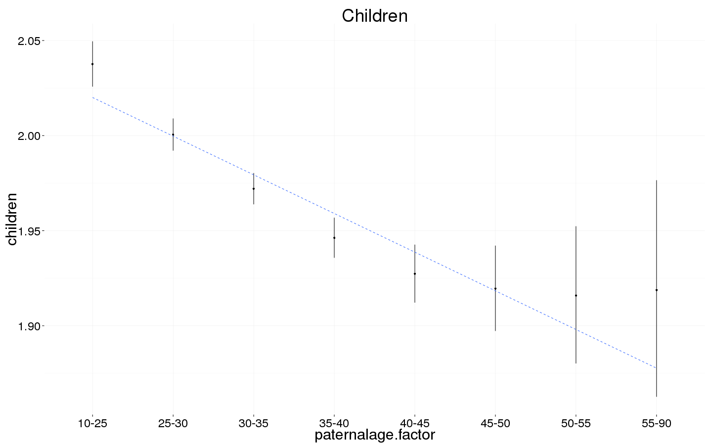